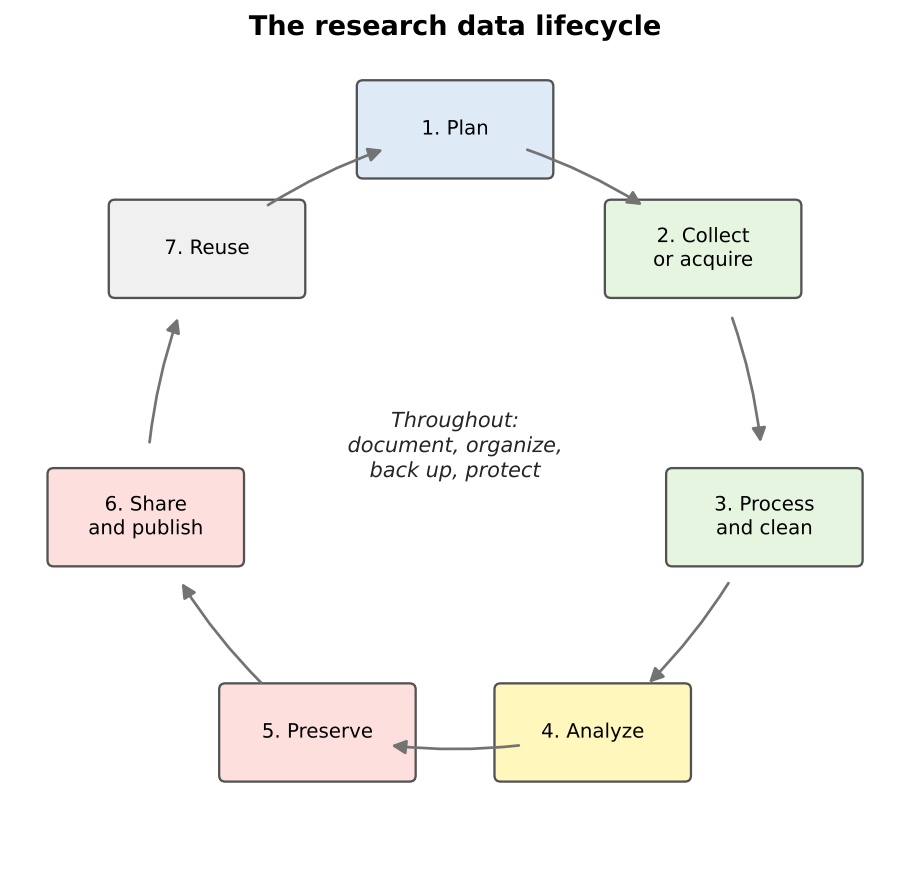
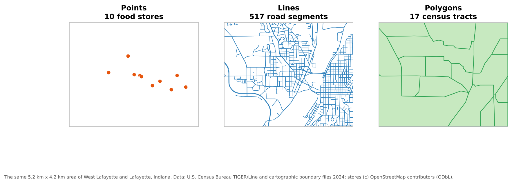
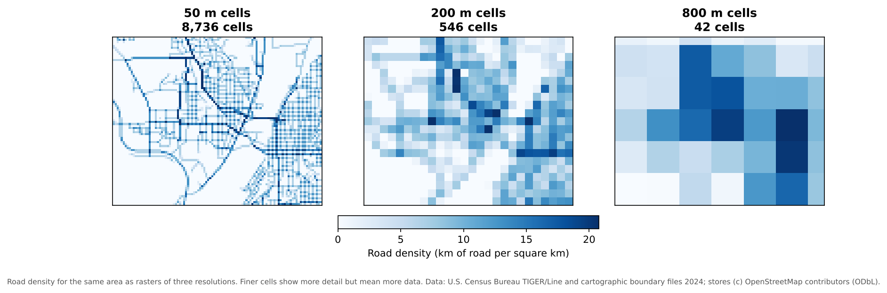
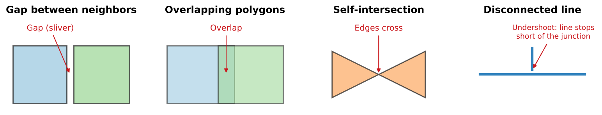

All in One View
Content from Introduction to Data Management
Last updated on 2026-10-17 | Edit this page
Overview
Questions
- What is research data management, and why does it matter for geospatial work?
- What are the stages of the research data lifecycle?
- What is a data management plan, and when is one required?
Objectives
- Define research data management and distinguish it from data curation
- Describe the stages of the research data lifecycle
- List the main sections of a data management plan
- Explain why geospatial data needs particular care
What is data management?
Research data management is everything you do to organize, store, protect and maintain data while a project is under way, so that the data stays usable, trustworthy and safe. It covers practical questions such as:
- Where will the files live, and who can reach them?
- What will the files and folders be called?
- How will we know which version is the latest?
- What happens if a laptop is lost or a hard drive fails?
- How will someone else (or you, in a year) understand what each column means?
Good data management is not glamorous, but almost every researcher
has a story of the alternative: a shapefile that no longer lines up, a
folder of files called final_v3_REAL.shp, or a thesis
chapter that could not be reproduced because the cleaned data was
overwritten.
Management and curation
This module and the Data Curation module are closely related:
| Data management (this module) | Data curation | |
|---|---|---|
| Focus | Day-to-day handling of data during a project | Making data understandable and usable beyond the project |
| Main tasks | Data models, formats, coordinate systems, organization, versions, backups, quality | Metadata, documentation, preservation, sharing, ethics |
| Main user | You and your team | Future users, including strangers and your future self |
In practice they overlap, and both start on the first day of a project, not at the end.
The research data lifecycle
Data passes through stages that are often drawn as a cycle, because published data is reused to start new projects.

| Stage | Geospatial example |
|---|---|
| Plan | Decide what layers you need, their coordinate system, file format and naming scheme |
| Collect or acquire | Download census tracts, digitize features from a scanned map, collect points with QField |
| Process and clean | Reproject layers, fix invalid geometries, join tables, remove duplicates |
| Analyze | Calculate distances, densities or statistics; make maps |
| Preserve | Save final datasets in stable, open formats with documentation |
| Share and publish | Deposit the data in a repository with a DOI and a license |
| Reuse | You, or others, start a new project from the published data |
Some activities happen at every stage: documenting what you did, keeping files organized, backing them up, and protecting sensitive information.
Why geospatial data needs extra care
Geospatial data has all the problems of ordinary data, and a few of its own:
- Many files make one dataset. A shapefile is at least three files that must travel together.
- Coordinates mean nothing without a coordinate reference system. The same numbers can describe places hundreds of kilometers apart.
- Data is often large. Imagery, elevation models and lidar can reach gigabytes or terabytes.
- Geometry can be invalid in ways a spreadsheet never is: polygons that cross themselves, gaps between neighbors, lines that do not connect.
- Location can be sensitive. A point can reveal where a person lives, works or receives care.
- Software projects link to data by path. Move a folder and a QGIS project can lose its layers.
The rest of this module takes these one at a time.
Data management plans
A data management plan (DMP) is a short document, written before a project starts, that describes what data will be created and how it will be handled, shared and preserved. Many funders require one:
- The U.S. National Science Foundation (NSF) requires a two-page Data Management and Sharing Plan with every proposal. If a project will not produce data, the proposal must explain why instead.
- The National Institutes of Health (NIH) has required a Data Management and Sharing Plan for research that generates scientific data since January 2023.
- A 2022 memorandum from the White House Office of Science and Technology Policy (the “Nelson memo”) directed federal agencies to make publications, and the data underlying them, publicly available without delay; agencies were asked to have updated policies in effect by the end of 2025.
Even when no funder asks for one, a DMP is a useful planning tool for a thesis or a team project.
What goes into a DMP
NSF’s guidance asks the plan to describe:
- The data: what types of data, samples, software and other materials the project will produce
- Standards: the formats and metadata standards that will be used
- Access and sharing: how and when data will be shared, and how privacy, confidentiality, security and intellectual property will be protected
- Reuse: policies for reuse, redistribution and derivative works
- Archiving: how the data will be preserved and kept accessible
For a geospatial project, a good plan also names the coordinate reference system, the file formats, the expected data volume, and how any sensitive locations will be protected. Free tools such as DMPTool provide templates for each funder, and many university libraries (including Purdue’s) offer help writing plans.
Data management is a team responsibility
On a team project, decide early who is responsible for each task: who keeps the master copy, who approves changes to the schema, who checks backups. Write it down. “Everyone” usually means “no one”.
Spot the risks
A graduate student keeps all of her thesis data in the Downloads
folder of her laptop. Files have names such as tracts.shp,
tracts2.shp, tracts_new.shp and
export.csv. She sometimes edits the original census
download directly. Name at least four risks, and a fix for each.
- No backup: if the laptop is lost or fails, everything is gone. Keep at least one other copy, ideally off-site or in institutional cloud storage.
-
Unclear names and versions: nobody can tell which
tractsfile is current or how they differ. Use descriptive names with dates or version numbers, and keep a short change log. - Raw data edited in place: the original can never be recovered. Keep raw data read-only and save changes as new files.
- Disorganized location: the Downloads folder mixes project files with everything else. Use a dedicated project folder with a clear structure.
-
No documentation: there is no record of where
export.csvcame from or what its columns mean. Add a README and a data dictionary.
Draft a mini plan
Pick a project you are working on, or imagine mapping grocery store access in your town. In five bullet points, one for each DMP section above, describe how you would manage the data.
An example for a grocery access project:
- Data: census tract boundaries and ACS tables (downloaded), grocery store points (field collected), road network (downloaded), maps and scripts.
- Standards: GeoPackage for vector data, CSV for tables, EPSG:26916 for analysis, ISO 19115 metadata written in QGIS.
- Access and sharing: store points shared openly after verification; no personal information collected.
- Reuse: data released under a CC BY 4.0 license; OpenStreetMap-derived layers keep the ODbL.
- Archiving: final datasets deposited in an institutional repository with a DOI.
- Data management is the day-to-day organization, storage, protection and maintenance of data during a project
- The research data lifecycle runs from planning through collection, processing, analysis, preservation, sharing and reuse
- Geospatial data needs extra care: multi-file formats, coordinate systems, large sizes, geometry validity and sensitive locations
- Many funders, including NSF and NIH, require a data management and sharing plan, and a plan is worth writing even when not required
Content from Geospatial Data Models
Last updated on 2026-10-17 | Edit this page
Overview
Questions
- How do computers represent places and features?
- What are vector and raster data, and when should I use each?
- How does map scale affect how a feature should be represented?
Objectives
- Describe the three vector geometry types and how attributes are attached to them
- Explain raster cells, resolution, bands and NoData values
- Choose an appropriate data model and geometry for a research question
- Explain what topology is and why it matters
Two ways to describe the world
A GIS has to turn a messy, continuous world into data a computer can store. There are two main approaches, called data models:
- Vector: the world is made of discrete features (a store, a road, a county) with exact boundaries, each described by coordinates and a row of attributes.
- Raster: the world is a surface divided into a grid of equal cells, and every cell holds a value (an elevation, a temperature, a land cover class, a color).
A third, very common kind of data is the plain table with no geometry at all, such as a spreadsheet of census counts. It becomes spatial when it is joined to a vector layer through a shared ID.
Vector data
Geometry
Vector features come in three basic geometry types:
| Geometry | Stored as | Dimensions | Examples |
|---|---|---|---|
| Point | One x, y coordinate pair | None (a location) | Stores, wells, survey respondents, cell towers |
| Line (polyline) | An ordered list of points (vertices) | Length | Roads, rivers, transit routes, trails |
| Polygon | A closed ring of vertices, possibly with holes | Area and perimeter | Census tracts, parcels, lakes, building footprints |

There are also multi-part versions (a multipoint, a multiline, or a multipolygon such as Hawaii, which is one state made of several islands). Most file formats require all features in one layer to share the same geometry type, so stores, roads and tracts go in separate layers.
Attributes
Each feature has a row in an attribute table. The geometry says where; the attributes say what. A made-up example:
| fid | store_name | store_type | snap_accepted | geometry |
|---|---|---|---|---|
| 1 | Example Supermarket | Supermarket | Yes | POINT (-86.9088 40.4539) |
| 2 | Example Market | Small market | Unknown | POINT (-86.9025 40.3863) |
| 3 | Example Corner Stop | Convenience | No | POINT (-86.8930 40.4190) |
Designing those attributes well is the subject of the Designing Your Data episode.
Topology
Topology describes how features relate to each other: which polygons share a boundary, which lines meet at a junction, which point lies inside which polygon. Some data models store topology explicitly; most everyday formats (shapefile, GeoPackage, GeoJSON) store each feature independently and leave you to check that neighbors line up. Topology matters whenever the analysis depends on connections:
- Network analysis needs road lines that actually meet at intersections
- Neighboring census tracts should share boundaries exactly, with no gaps or overlaps
- Each point should fall inside exactly one polygon of a zoning layer
The Data Quality episode shows common topology errors and how to find them.
Raster data
A raster is a grid of cells (or pixels), stored row by row. Its key properties are:
| Property | Meaning | Example |
|---|---|---|
| Cell size (spatial resolution) | The ground width of one cell | 10 m for Sentinel-2, 30 m for Landsat |
| Extent | The area the grid covers | One county, one satellite scene |
| Bands | Layers of values for the same cells | Red, green, blue and near-infrared bands of an image |
| Data type | What kind of number each cell holds | 8-bit integers (0 to 255) for a photo; 32-bit decimals for temperature |
| NoData value | A special value meaning “no information here” | -9999, or areas outside the image |

Halving the cell size multiplies the number of cells by four, so resolution has a direct cost in storage and processing time. Choose the coarsest resolution that still answers your question.
Rasters come in two broad kinds:
- Continuous rasters hold measured quantities that vary smoothly: elevation, temperature, rainfall, reflectance in a satellite band.
- Categorical (discrete) rasters hold classes: land cover type, soil type, a zoning code. Their values are labels, so averaging them makes no sense.
NoData is not zero
A NoData cell means “unknown”, while 0 can be a real value (0 mm of rain, 0 m elevation at sea level). If the NoData value is not set correctly, a GIS will treat missing areas as real data and averages will be wrong. Always check a raster’s NoData value when you first open it.
Choosing a data model
| Question | Usually best as |
|---|---|
| Where are the grocery stores, and what are they like? | Vector points |
| How long is the route to the nearest store? | Vector lines (a network) |
| How many households in each tract have no car? | Vector polygons joined to a table |
| How hot is each part of the city on a summer afternoon? | Raster (continuous) |
| What is the land cover around each school? | Raster (categorical), summarized to vector buffers |
You can convert between models (rasterize vector data, or vectorize a raster), but every conversion loses something: rasterizing blurs exact boundaries to the cell size, and vectorizing a raster produces blocky, stair-stepped polygons.
Scale and generalization
How a feature should be represented depends on the scale of the map or analysis:
- A city is a point on a map of the United States, but a polygon on a map of Indiana.
- A river is a line on a state map, but a polygon (with two banks) on a detailed city map.
- A building is a point in a regional study of businesses, but a polygon in a study of floor area.
Data made for small-scale maps is usually generalized: lines are simplified and small features dropped. The Census Bureau’s 1:20,000,000 cartographic boundary files are a good example. Generalized data looks fine on a national map but is not accurate enough for measuring distances or areas at the neighborhood level. Use data whose level of detail matches your analysis.
Pick the model and geometry
How would you represent each of these, and why?
- Bus stops in a city
- Average annual rainfall across Indiana
- School attendance zones
- Hiking trails in a state park
- Land cover (forest, farmland, urban, water) for a county
- Vector points: discrete locations with attributes such as routes served.
- Raster (continuous): rainfall varies smoothly across space.
- Vector polygons: each zone has a clear boundary and attributes such as school name.
- Vector lines: trails have length and connect at junctions; topology matters for routing.
- Raster (categorical): land cover is usually classified from satellite imagery, cell by cell. It can be converted to polygons for some uses, at the cost of blocky edges.
Resolution and storage
A single-band raster covering a 50 km by 50 km county has 30 m cells and stores each cell in 4 bytes. About how large is it? What happens if you switch to 10 m cells?
50,000 m / 30 m is about 1,667 cells on each side, or about 2.8 million cells. At 4 bytes each, that is about 11 MB. With 10 m cells there are 5,000 cells per side, or 25 million cells, about 100 MB: nine times larger, because resolution improved three times in both directions. Multi-band images multiply this again by the number of bands.
- Vector data represents discrete features as points, lines or polygons, each with a row of attributes
- Raster data represents surfaces as a grid of cells with a resolution, bands, a data type and a NoData value
- Topology describes how features connect and share boundaries; network and boundary analysis depend on it
- The right data model and geometry depend on the question and the scale of the analysis
- Finer raster resolution grows data size with the square of the change in cell size
Content from Geospatial File Formats
Last updated on 2026-10-17 | Edit this page
Overview
Questions
- What are the common file formats for vector and raster data?
- What are the limitations of the shapefile?
- Which format should I use to work with, to share, and to archive my data?
Objectives
- Recognize the most common vector and raster file formats and their file extensions
- Explain the strengths and limitations of shapefiles, GeoPackages and GeoJSON
- Distinguish open from proprietary formats
- Choose a suitable format for working, sharing and long-term storage
Why formats matter
The same map layer can be stored in many file formats. The choice affects whether others can open your data, whether attribute names and values survive, how large the files are, and whether the data will still be readable in twenty years. A few questions to ask of any format:
- Is it open (a published, freely implementable specification) or proprietary (controlled by one company)?
- Is it one file or several that must stay together?
- Does it preserve the coordinate reference system, field names, data types and null values?
- How large can it get, and how fast is it?
Vector formats
| Format | Extension(s) | Open? | Notes |
|---|---|---|---|
| Shapefile |
.shp .shx .dbf
.prj (and others) |
Published by Esri | The old standard; widely supported but limited (see below) |
| GeoPackage | .gpkg |
Yes (OGC standard) | One file holding many vector layers, tables and even rasters; the default in QGIS |
| GeoJSON | .geojson |
Yes (IETF RFC 7946) | Plain text; ideal for the web and small datasets; always in longitude and latitude (WGS 84) |
| KML / KMZ |
.kml .kmz
|
Yes (OGC standard) | Google Earth’s format; good for sharing with the public, weak for analysis |
| CSV with coordinates | .csv |
Yes | A table with x and y (or longitude and latitude) columns; only points; the CRS must be documented separately |
| File geodatabase |
.gdb (a folder) |
No (Esri) | ArcGIS’s main format; readable by QGIS and GDAL, but best kept for ArcGIS workflows |
| GeoParquet | .parquet |
Yes (open specification, version 1.1) | Columnar format for large datasets and cloud analysis; growing quickly |
The trouble with shapefiles
The shapefile dates from the early 1990s. It is everywhere, and every GIS can read it, but it has real limitations:
-
Several files make one dataset. At minimum
.shp(geometry),.shx(index) and.dbf(attributes); usually also.prj(coordinate system) and.cpg(text encoding). Lose the.prjand the layer no longer knows where it is; lose the.dbfand the attributes are gone. -
Field names are limited to 10 characters.
produce_availablebecomesproduce_av, and two long names can collide. - Text fields hold at most 254 characters, and there is no true date-and-time type.
- Each file is limited to 2 GB.
- One geometry type per file, and no way to store several layers together.
- Null values are poorly supported, so missing numbers often turn into 0.
None of these are a problem for a quick download, but they cause silent data loss when you save your own carefully designed data as a shapefile.
Prefer GeoPackage for your own work
A GeoPackage is a single file (an SQLite database) that can hold all the layers of a project, with long field names, real date and time fields, proper null values and no 2 GB limit. It is an Open Geospatial Consortium (OGC) standard and the default format in QGIS. If you receive shapefiles, it is good practice to convert them to a GeoPackage at the start of a project.
Raster formats
| Format | Extension(s) | Notes |
|---|---|---|
| GeoTIFF |
.tif .tiff
|
The standard raster format: a TIFF image with georeferencing built in; supports many bands and data types |
| Cloud Optimized GeoTIFF (COG) | .tif |
A GeoTIFF organized so programs can read just the part they need over the web; an OGC standard |
| JPEG 2000 | .jp2 |
Compressed imagery; used by Sentinel-2 |
| NetCDF and HDF5 |
.nc .h5
|
Multidimensional arrays (for example, temperature by latitude, longitude, height and time); common for climate and Earth observation data |
| Zarr | a folder | A cloud-friendly format for very large multidimensional arrays |
| ASCII grid | .asc |
A plain-text grid; easy to read, but large and slow |
| PNG or JPEG with a world file |
.png + .pgw
|
An ordinary image plus a small text file of georeferencing; fine for display, not for analysis |
Compression
Raster files can be compressed to save space. Lossless compression (such as DEFLATE or LZW in a GeoTIFF) keeps every value exactly. Lossy compression (such as JPEG) discards detail to save more space, which is acceptable for a background image but not for data you will measure or analyze.
Tables
Tables without geometry are often the largest part of a social
science project. CSV is the safest format for sharing
them: it is plain text, opens anywhere, and will remain readable for
decades. Spreadsheet files (.xlsx) are convenient for
editing but can hide problems: merged cells, formulas, colors that carry
meaning, and automatic conversion of codes such as 01001
into the number 1001 or of MAR1 into a
date.
Watch out for leading zeros
FIPS codes and GEOIDs often start with zero (01 is
Alabama, 01001 is Autauga County). Opening a CSV in a
spreadsheet program can silently turn them into numbers and drop the
zero, breaking every later join. Import ID columns as
text, and check them after every conversion.
Which format when?
| Purpose | Good choices | Why |
|---|---|---|
| Working copy of a project | GeoPackage (vector), GeoTIFF (raster) | Complete, fast, few limitations |
| Sharing with collaborators | GeoPackage, or the format they use | One file is easy to send |
| Web maps and small datasets | GeoJSON | Readable by web libraries and by people |
| Very large vector data | GeoParquet | Fast, compact, cloud-friendly |
| Large imagery shared online | Cloud Optimized GeoTIFF | Readers can fetch only what they need |
| Long-term preservation | Open, well-documented formats: GeoPackage, GeoJSON, GeoTIFF, CSV | Readable without any one company’s software |
Converting between formats
Conversions are routine (in QGIS, right-click a layer and choose Export > Save Features As…), but each one is a chance to lose information. After converting, check:
- that the coordinate reference system is still correct
- that field names were not shortened and data types did not change (text IDs becoming numbers)
- that null values did not become 0 or empty strings
- that the number of features is the same
- that special characters (accents, non-Latin scripts) display correctly
Behind most GIS software, including QGIS, is the open-source GDAL library, which reads and writes more than 200 formats. That is why QGIS can open almost anything you are given.
What went wrong?
A colleague sends you a zip file containing stores.shp
and stores.dbf. When you open it in QGIS, the points appear
near the coast of Africa, and a field called produce_av
holds values that should be in produce_available. What
happened, and what would you ask for?
The .prj file is missing, so QGIS does not know the
layer’s coordinate reference system. The points are probably in a
projected system (with coordinates in meters) being read as degrees, or
in degrees being read as the wrong system, so they land near 0°
latitude, 0° longitude. The .shx index is also missing,
which some software cannot do without. The shortened field name is the
shapefile’s 10-character limit. Ask for the complete set of files
(including .shx and .prj), or better, a
GeoPackage, plus the CRS (for example its EPSG code).
Choose a format
What format would you use for each, and why?
- A field team’s grocery store points, with long field names and a date and time for each visit
- A small layer of 20 campus buildings for an interactive web map
- A 40 GB set of Landsat images to share with collaborators who will analyze small areas
- A table of ACS estimates by census tract that will be archived with a thesis
- GeoPackage: long field names, true date and time fields and proper nulls; a shapefile would truncate names and lose the times.
- GeoJSON: small, plain text, and read directly by web mapping libraries.
- Cloud Optimized GeoTIFF: collaborators can read only the areas they need instead of downloading 40 GB.
- CSV, with GEOIDs stored as text and a data dictionary describing each column: open, simple and durable.
- Formats differ in openness, number of files, size limits and what attribute information they preserve
- Shapefiles are universal but limited: several files, 10-character field names, 2 GB, weak null support
- GeoPackage is a good default for your own vector work; GeoTIFF for rasters; CSV for tables
- Prefer open, well-documented formats for sharing and preservation
- Check the CRS, field names, data types, nulls and feature counts after every conversion
Content from Coordinate Reference Systems
Last updated on 2026-10-17 | Edit this page
Overview
Questions
- What is a coordinate reference system, and why does every layer need one?
- What is the difference between geographic and projected coordinate systems?
- What are EPSG codes, and which ones will I meet most often?
- Why do layers sometimes appear in the wrong place, and how do I fix it?
Objectives
- Explain the parts of a coordinate reference system: datum, coordinate system and units
- Distinguish geographic from projected coordinate systems and know when to use each
- Recognize common EPSG codes for work in the United States
- Distinguish defining a coordinate system from reprojecting data, and avoid the classic mistakes
Coordinates need context
The numbers 507575, 4474900 and
-86.9107, 40.4247 describe the same place:
the Purdue Memorial Union. The first pair is in meters in one system;
the second is in degrees in another. Coordinates only mean something
together with their coordinate reference system (CRS),
which says how the numbers relate to locations on Earth.

Managing the CRS of every layer is one of the most important, and most often neglected, parts of managing geospatial data.
The parts of a CRS
| Part | What it does | Examples |
|---|---|---|
| Datum | A model of the Earth’s shape (an ellipsoid) and how it is anchored to the real Earth | WGS 84 (used by GPS), NAD83 (the official datum for North America) |
| Coordinate system | How positions are expressed: angles on the ellipsoid, or x and y on a flat projection | Latitude and longitude; UTM easting and northing |
| Units | The units of the coordinates | Degrees, meters, U.S. survey feet |
| Projection (projected systems only) | The mathematical method for flattening the curved Earth | Transverse Mercator, Albers Equal Area, Lambert Conformal Conic |
Different datums place the same point at slightly different coordinates. In the contiguous United States, NAD83 and WGS 84 differ by about one to two meters: irrelevant for a state map, but important for surveying or precise field data.
Geographic and projected systems
| Geographic CRS | Projected CRS | |
|---|---|---|
| Coordinates | Latitude and longitude | x (easting) and y (northing) |
| Units | Degrees | Usually meters or feet |
| Shape of Earth | Curved (a 3D ellipsoid) | Flat (a 2D plane) |
| Good for | Storing and exchanging data, global datasets, GPS | Measuring distances and areas, analysis, local mapping |
| Example | EPSG:4326 (WGS 84) | EPSG:26916 (NAD83 / UTM zone 16N) |
A degree of longitude is about 111 km at the equator but only about 85 km in Indiana, and it shrinks to zero at the poles. So distances and areas calculated in degrees are meaningless. Before measuring anything, reproject to a suitable projected CRS.
Every projection distorts something: area, shape, distance or direction. Choose one that preserves what your analysis needs:
- Equal-area projections (such as Albers) for comparing areas and densities across a large region
- Conformal projections (such as UTM or Lambert Conformal Conic) for local shapes and angles
- UTM zones and State Plane zones for accurate local measurements
Choosing a projection for a finished map, and seeing how projections distort the world, is covered in the Data Visualization module’s Fundamentals of Map Design episode.
EPSG codes
Every common CRS has a numeric code in the EPSG
registry (originally compiled by the European Petroleum Survey Group).
Using codes avoids ambiguity: “UTM” alone is not enough, but
EPSG:26916 is exact.
| EPSG code | Name | Use |
|---|---|---|
| 4326 | WGS 84 (latitude and longitude) | GPS, GeoJSON, most web data, global datasets |
| 4269 | NAD83 (latitude and longitude) | U.S. federal data, including Census TIGER/Line files |
| 3857 | WGS 84 / Pseudo-Mercator | Web map tiles (Google, OpenStreetMap, Esri). For display only: areas are badly distorted |
| 5070 | NAD83 / Conus Albers | Equal-area maps and analysis of the contiguous United States |
| 26916 | NAD83 / UTM zone 16N | Accurate local measurement in Indiana and neighboring states |
| 32616 | WGS 84 / UTM zone 16N | The same zone on the WGS 84 datum |
You can look up any code, and find the right one for an area, at https://epsg.io/.
How the CRS is stored
- In a shapefile, the CRS is in the separate
.prjfile. - In a GeoPackage or GeoTIFF, it is stored inside the file.
- GeoJSON (RFC 7946) is always in WGS 84 longitude and latitude.
- A CSV of coordinates stores no CRS at all: you must
document it, for example in a column name (
lon_wgs84) and in the README.
Defining versus reprojecting
These two operations sound similar but do very different things:
| Defining (assigning) a CRS | Reprojecting (transforming) | |
|---|---|---|
| What it does | Tells the software which CRS the coordinates are already in | Calculates new coordinates in a different CRS |
| Changes the numbers? | No | Yes |
| When to use | The CRS is missing or wrong, and you know the correct one | You need the data in another CRS for analysis or to match other layers |
| In QGIS | Layer Properties > Source > Assigned Coordinate Reference System, or the Assign projection tool | Reproject layer tool, or Export > Save Features As… with a new CRS |
The classic mistake is to define a CRS when you meant to reproject. The numbers stay the same, but the software now believes they mean something else, and the layer jumps to the wrong place (or the wrong continent).
On-the-fly reprojection can hide problems
QGIS reprojects every layer on the fly to the project’s CRS, so layers in different systems still draw in the right place. That is convenient, but it can hide the fact that your layers differ. Tools that combine layers (clip, join by location, distance and network tools) work best, and sometimes only work correctly, when the layers share one projected CRS. Some tools also report results in the project’s units. Before analysis, reproject every layer to the same projected CRS and set the project to it.
Troubleshooting checklist
| Symptom | Likely cause | Fix |
|---|---|---|
| Layer appears near 0° latitude, 0° longitude (off West Africa) | Projected coordinates (meters) read as degrees, or a missing CRS | Find the correct CRS and define it |
| Layer is shifted by a meter or two | Datum mismatch (for example NAD27 and NAD83, or NAD83 and WGS 84 with no transformation) | Use the right datum transformation when reprojecting |
| Areas or distances are tiny numbers such as 0.0002 | Calculated in degrees | Reproject to a projected CRS first |
| Areas look far too large near the poles | Calculated in Web Mercator (EPSG:3857) | Use an equal-area projection |
| Layer will not appear at all | Coordinates in the wrong order (latitude, longitude swapped) | Check which column is x and which is y |
Define or reproject?
For each situation, should you define (assign) the CRS or reproject the data?
- You receive a shapefile with no
.prj, and the metadata says the data is in NAD83 / UTM zone 16N. - Your census tracts are in NAD83 latitude and longitude, and you need to calculate their areas in square kilometers.
- Your field points were collected in WGS 84, and the rest of the project is in EPSG:26916.
- Define EPSG:26916. The coordinates are already in that system; the software just does not know it.
- Reproject to an equal-area projected CRS (such as EPSG:5070) or a local one (EPSG:26916), then calculate areas.
- Reproject the points to EPSG:26916 so every layer shares one projected CRS.
Read the coordinates
Without opening a GIS, which CRS is each of these coordinate pairs probably in?
(-86.91, 40.42)(507575, 4474900)(-9675000, 4928000)
- Geographic (latitude and longitude, such as EPSG:4326 or 4269): small numbers within -180 to 180 and -90 to 90.
- UTM (here zone 16N): eastings around 500,000 m and northings in the millions of meters.
- Web Mercator (EPSG:3857): coordinates in meters from the equator and the prime meridian, with large negative x values in the Western Hemisphere.
- Coordinates are meaningless without their coordinate reference system: datum, coordinate system, units and projection
- Store and exchange data in geographic systems; measure and analyze in projected ones
- Use EPSG codes to name CRSs exactly; 4326, 4269, 3857, 5070 and 26916 are common in U.S. work
- Defining a CRS labels existing coordinates; reprojecting calculates new ones. Confusing the two moves data to the wrong place
- Before analysis, put every layer, and the project, in the same projected CRS
Content from Designing Your Data
Last updated on 2026-10-17 | Edit this page
Overview
Questions
- How do I decide what layers and attributes a project needs?
- What is a data dictionary, and what goes in it?
- How do field types, domains and unique IDs keep data consistent?
- How do tables relate to each other and to map layers?
Objectives
- Translate a research question into layers, geometries and attributes
- Write a data dictionary with field names, types, lengths, domains and null rules
- Explain the role of primary keys and foreign keys in joining data
- Recognize one-to-one, one-to-many and many-to-many relationships
Start from the question
Designing a dataset (sometimes called schema design or, in a GIS, geodatabase design) is the most important and most time-consuming part of building one. Decisions made here are hard to change later, after hundreds of records have been entered. Work through these steps on paper or in a spreadsheet before creating anything in a GIS.
Step 1: What things will you record?
List each kind of object or phenomenon you will record. Each usually becomes its own layer (or table). For a study of food access, these might be grocery stores, bus stops, and survey respondents’ neighborhoods.
Step 2: What geometry suits each one?
Decide whether each is best represented as a point, line or polygon at the scale you will analyze it (see the Geospatial Data Models episode). A store is a point for an access study but could be a polygon for a study of store size.
Step 3: What do you need to know about each one?
Brainstorm the attributes: the questions you will ask of the data. For grocery stores:
| Type of information | Example attributes |
|---|---|
| Identity of the store | store ID, name, chain or brand |
| Location | address, city, ZIP code, coordinates |
| Benefits accepted | SNAP accepted, WIC accepted |
| Food available | fresh produce available, fresh meat available |
| When it was observed | date and time of the visit, hours posted |
| Anything else relevant | notes |
| Evidence | storefront photograph |
Only collect what you will use. Every extra field costs time to collect and check, and personal information creates obligations to protect it.
The data dictionary
A data dictionary turns that list into precise fields. It is both a design tool and a key piece of documentation: it tells everyone who enters or uses the data exactly what each field means.
| Field name | Description | Type | Length | Allowed values (domain) | Nulls allowed? |
|---|---|---|---|---|---|
store_id |
Unique ID for each store | Integer | Assigned automatically, never reused | No | |
store_name |
Name shown on the store’s sign | Text | 60 | Free text | No |
store_type |
Kind of store | Text | 20 | Supermarket, Small market, Convenience, Other | No |
address |
Street address | Text | 80 | Free text | Yes |
city |
City | Text | 30 | Lafayette, West Lafayette, Other | No |
zip |
ZIP code | Text | 5 | Five digits | Yes |
snap_accepted |
SNAP benefits accepted, based on posted signs | Text | 7 | Yes, No, Unknown | No |
wic_accepted |
WIC benefits accepted, based on posted signs | Text | 7 | Yes, No, Unknown | No |
produce_available |
Fresh produce on sale at the visit | Text | 7 | Yes, No, Unknown | No |
visit_datetime |
Date and time of the field visit | Date and time | No | ||
hours_posted |
Opening hours as posted on the door | Text | 100 | Free text | Yes |
notes |
Anything unusual about the visit | Text | 250 | Free text | Yes |
photo |
Storefront photograph | Attachment (file path) | Yes |
Field types
Choose the type that matches how the value will be used:
| Type | Use for | Watch out for |
|---|---|---|
| Integer | Counts and ID numbers you will calculate with | Not for codes with leading zeros |
| Decimal (real, double) | Measurements: distances, percentages, prices | Set enough precision |
| Text (string) | Names, categories, and codes such as ZIP codes and GEOIDs | Set a sensible maximum length |
| Date and date and time | When something happened | Shapefiles cannot store times; use GeoPackage |
| Boolean (true or false) | Simple yes or no | Cannot say “unknown”; a Yes, No, Unknown text domain is often better |
A useful rule: if you would never do arithmetic with it, store it as text. ZIP codes, FIPS codes, GEOIDs and phone numbers are labels, not quantities.
Domains
A domain is the list (or range) of values a field may hold. Dropdown menus in a field app enforce it. Domains prevent the most common data entry problem: the same thing written many ways (“SNAP”, “snap”, “EBT”, “yes”). In QGIS, domains are set in Layer Properties > Attributes Form with the Value Map widget; in a GeoPackage or file geodatabase they can also be stored in the data itself.
Include Unknown in categorical domains. A blank can mean “unknown”, “not applicable” or “forgot to fill in”; an explicit Unknown is honest and unambiguous.
Field names
Good field names are:
-
short but meaningful:
snap_accepted, notsnapordoes_the_store_accept_snap_benefits - lowercase with underscores, no spaces or special characters, and not starting with a number
-
consistent: if one field is
wic_accepted, the next issnap_accepted, notSNAPaccept - 10 characters or fewer only if the data must ever be saved as a shapefile
Unique IDs and keys
Every feature needs a unique identifier that never changes and is never reused. Names make poor IDs: two stores can share a name, and names change. Coordinates make poor IDs too, because they change when a point is corrected.
In database terms:
- A primary key uniquely identifies each row of a
table (
store_idin the store layer;GEOIDin a census tract layer). - A foreign key is a field in another table that
refers to a primary key (a
store_idcolumn in a table of repeated visits; aGEOIDcolumn in a table of ACS estimates).
Joins work by matching keys, so keys must have identical values and types in both tables. A GEOID stored as text in one table and as a number in the other will not match.
Relationships between tables
| Relationship | Example | How to handle it |
|---|---|---|
| One-to-one | Each census tract has one row of ACS estimates | A simple join adds the columns to the tract layer |
| One-to-many | Each store is visited several times | Keep visits in a separate table with a
store_id foreign key, and link it with a
relation rather than copying store details into every
visit |
| Many-to-many | Stores accept many benefit programs; each program is accepted by many stores | Use a third linking table with one row per store and program |
Keeping repeated information in separate, linked tables (called normalization) avoids inconsistencies: if a store’s name is stored once, it cannot be spelled two different ways. QGIS supports this through Project Properties > Relations, and a GeoPackage can hold all the linked tables in one file.
Some choices are easy to change later, some are not
Adding a new field later is easy. Renaming fields, changing a field’s type, changing the geometry type, or changing the meaning of a category after data has been collected is hard and error-prone. Spend the time on the design, test it on a few real records, and only then start collecting.
Fix the data dictionary
What is wrong with each of these field definitions, and how would you fix it?
| Field name | Type | Allowed values |
|---|---|---|
Store Name |
Text | |
zip |
Integer | |
open |
Boolean | true, false |
type |
Text | free text |
-
Store Namecontains a space and capitals; usestore_name. -
zipas an integer drops leading zeros (02134becomes2134) and invites meaningless arithmetic; store it as text with a length of 5. -
openis ambiguous (open now? open 24 hours?) and a Boolean cannot say “unknown”. Use a clearer name, such asopen_at_visit, with a Yes, No, Unknown domain. -
typeas free text will produce inconsistent categories; give it a domain such as Supermarket, Small market, Convenience, Other. A more specific name (store_type) also helps.
Design your own
Choose a topic from your own research or teaching (for example, park amenities, public art, or vacant lots). Write a data dictionary with at least six fields, including a unique ID, at least two fields with domains, and a date field. Decide which fields may be null.
Answers will vary. Check your design against these questions:
- Does every feature get a unique, permanent ID?
- Do categorical fields have domains that include Unknown?
- Are codes stored as text and measurements as numbers?
- Are field names short, lowercase and free of spaces?
- Is there a date (and time, if it matters) for when each record was observed?
- Does every field have a description someone else could understand?
- Design data from the research question: the things you record become layers, and the questions become attributes
- A data dictionary defines each field’s name, meaning, type, length, allowed values and null rule
- Store codes such as ZIP codes and GEOIDs as text; use domains with an Unknown option for categories
- Every feature needs a permanent unique ID; joins match primary keys to foreign keys
- Keep repeated information in separate related tables rather than copying it
Content from Organizing, Versioning and Backing Up
Last updated on 2026-10-17 | Edit this page
Overview
Questions
- How should I organize the folders of a geospatial project?
- What makes a good file name?
- How do I keep track of versions without losing work?
- How should I store and back up my data?
Objectives
- Set up a clear project folder structure that separates raw, processed and output data
- Apply file naming conventions that sort well and work on every computer
- Keep QGIS projects portable with relative paths
- Choose a versioning approach and apply the 3-2-1 backup rule
A place for everything
A consistent folder structure means you, your collaborators and your future self can find things without asking. One widely used layout for a geospatial project:
grocery_access_2026/
├── README.md what the project is, who made it, how the folders are organized
├── data/
│ ├── raw/ original downloads and field exports; never edited
│ ├── processed/ cleaned, reprojected and joined data
│ └── documentation/ data dictionaries, metadata, source notes
├── scripts/ Python or R code, numbered in the order they run
├── qgis/ QGIS project files (.qgz) and saved styles
├── outputs/
│ ├── maps/ exported map images and PDFs
│ └── tables/ summary tables and statistics
└── docs/ reports, presentations and the thesis or paperThe details can vary, but three principles matter most:
-
Raw data is read-only. Keep the original download
or field export exactly as you received it, and never edit it. Every
change produces a new file in
processed/. If something goes wrong, you can always start again from the original. (On most systems you can mark the folder or files as read-only.) - Separate inputs, processing and outputs. Anyone should be able to tell what came from elsewhere, what you made, and what you are presenting.
- Document the structure in a README at the top of the project.
File naming
Good file names are descriptive, consistent and machine-friendly.
| Instead of | Use | Why |
|---|---|---|
final_FINAL_v2 (copy).shp |
tippecanoe_tracts_2024_utm16n.gpkg |
Says what, where, when and in which CRS |
Tracts New.gpkg |
tracts_new.gpkg |
No spaces or capitals; works in every program and in scripts |
map 3-4-26.png |
2026-03-04_no_car_households_map.png |
ISO 8601 dates (YYYY-MM-DD) sort in date order |
data.csv |
acs2024_tippecanoe_tracts_b08201.csv |
Unique and self-explanatory even outside its folder |
clean.py, analysis.py
|
01_download.py, 02_clean.py,
03_analysis.py
|
Numbers show the order to run them |
Rules of thumb:
- Use only letters, numbers, underscores (
_) and hyphens (-). Avoid spaces and characters such as& % # ( ) ' /. - Put the most important element first, so related files sort together.
- Write dates as
YYYY-MM-DD(orYYYYMMDD). - Pad numbers with zeros (
01,02, …10) so they sort correctly. - Agree on the convention with your team and write it in the README.
Keep QGIS projects portable
A QGIS project file (.qgz) does not contain the data; it
stores paths to each layer. If those paths are
absolute
(C:\Users\Maria\Desktop\project\data\roads.gpkg), the
project breaks as soon as the folder is moved, renamed or opened on
another computer.
- Use relative paths
(
../data/processed/roads.gpkg). In QGIS this is the default, set in Project > Properties > General > Save paths. - Keep data inside the project folder rather than scattered across the computer.
- If layers break, QGIS opens a Handle Unavailable Layers dialog where you can point each layer to its new location.
Version control
Data and code change constantly during a project. Without a system, you end up with a folder of near-identical files and no idea which one is current.
Simple versioning
For small projects, a clear manual system works:
- Add a version number or date to processed files:
stores_v01.gpkg,stores_v02.gpkg, orstores_2026-03-04.gpkg. - Keep a change log (a plain text file) that records what changed in each version and why:
2026-03-04 stores_v02.gpkg Removed 2 duplicate stores (Fresh Foods, Main St.); fixed 5 store_type values.
2026-02-20 stores_v01.gpkg First cleaned version of the field export.- Never reuse a version number, and never edit an old version.
Git and GitHub
Git is a version control system that records every change to a set of files, who made it and why, and lets you return to any earlier state. GitHub hosts Git repositories online for sharing and collaboration (these lessons are themselves Git repositories on GitHub).
Git is excellent for code, documentation and small text-based data such as CSV and GeoJSON files, where it can show exactly which lines changed. It is a poor fit for large binary files (imagery, large GeoPackages): it cannot show what changed inside them, and repositories grow quickly. GitHub warns about files larger than 50 MB and blocks files larger than 100 MB. Large data is better kept in research storage or a data repository, with only the code and documentation in Git.
Storage and backup
Where to keep the working copy
| Option | Good for | Watch out for |
|---|---|---|
| Your laptop | Fast day-to-day work | Theft, loss, hardware failure |
| External drive | A local backup copy | Easy to lose; drives fail; keep it in a different place |
| Institutional cloud or research storage | Collaboration and secure, backed-up storage | Check what kinds of data your institution allows there |
| Commercial cloud storage | Convenient syncing | Data protection rules; syncing also spreads accidental deletions |
Universities provide approved storage for research data; at Purdue, Research Computing and the Libraries can advise on the right option for a project. Sensitive data (for example, data about identifiable people) may only be stored in approved, secure locations.
Syncing is not backup
A synced folder copies your mistakes too: delete or overwrite a file and the change reaches every copy within seconds. A backup is a separate copy, ideally with older versions kept, that you can restore from.
The 3-2-1 rule
Keep at least:
- 3 copies of your data (the working copy plus two backups),
- on 2 different types of storage (for example, your laptop and a cloud service),
- with 1 copy off-site (in a different building, or in the cloud).
And test your backups: a backup you have never restored from is a hope, not a plan.
Rename these files
Rewrite each name following the conventions in this episode:
-
Final Map (2).png, a map of grocery stores made on 7 March 2026 -
tracts.shp, Indiana census tracts for 2024 in UTM zone 16N -
New Microsoft Excel Worksheet.xlsx, ACS vehicle data for Tippecanoe County tracts -
script.py, the second script in the workflow, which joins ACS data to tracts
2026-03-07_grocery_stores_map.png-
indiana_tracts_2024_utm16n.gpkg(also converting it to a GeoPackage) -
acs2024_tippecanoe_tracts_vehicles.csv(as CSV for a durable, open copy) 02_join_acs_to_tracts.py
Is this backed up?
A researcher keeps her project on her laptop, in a folder synced to a cloud service. Does she meet the 3-2-1 rule? What could still go wrong?
Not quite. She has two copies on two kinds of storage, one of them off-site, but syncing means an accidental deletion, overwrite or ransomware infection on the laptop is copied to the cloud. She needs a third, separate copy, for example a scheduled backup to an external drive or a backup service that keeps older versions. Checking that the cloud service keeps version history (and for how long) would also help.
- Use a consistent folder structure that separates raw, processed and output data, and keep raw data read-only
- Name files descriptively and consistently, without spaces, with ISO 8601 dates and zero-padded numbers
- Keep data inside the project folder and use relative paths so QGIS projects stay portable
- Track versions with numbered files and a change log, or with Git for code and small text data
- Follow the 3-2-1 backup rule, remember that syncing is not backup, and test your backups
Content from Data Quality
Last updated on 2026-10-17 | Edit this page
Overview
Questions
- What does “quality” mean for geospatial data?
- What kinds of errors are common in vector data?
- How can I check and improve the quality of a dataset?
Objectives
- Describe the elements of spatial data quality
- Recognize invalid geometries and topology errors
- Plan a quality assurance and quality control workflow
- Record quality checks so others can judge fitness for use
Quality means “fit for use”
No dataset is perfect. A road layer accurate to 10 meters is excellent for a regional access study and useless for engineering a new intersection. Data quality is therefore about fitness for use: is the data good enough for this purpose, and do we know its limitations?
The elements of spatial data quality
International standard ISO 19157 (endorsed by the U.S. Federal Geographic Data Committee) describes data quality through a set of elements. In plain terms:
| Element | Question | Grocery store example |
|---|---|---|
| Completeness | Is anything missing (omission) or extra (commission)? | A new store is missing; a closed store is still listed |
| Logical consistency | Does the data follow its own rules: domains, formats, topology? |
store_type contains “gas station”, which is not in the
domain |
| Positional accuracy | How close are the coordinates to the true location? | A point is 40 m from the store, in the parking lot |
| Thematic (attribute) accuracy | Are the attribute values correct? Are the classes right? | A store marked as accepting SNAP does not |
| Temporal quality | Is the data current, and are dates correct and consistent? | Hours were recorded three years ago |
| Usability | Overall, can it be used for the intended purpose? | Good enough for a city-wide access study? |
A further, essential piece of information is lineage: where the data came from and what was done to it. Without lineage, nobody can judge the other elements. (Lineage is recorded in metadata; see the Data Curation module.)
Geometry errors
Vector geometry has rules. A polygon’s boundary must close and must not cross itself; neighboring polygons in a layer such as census tracts should not overlap or leave gaps. Data that breaks these rules can make tools fail or, worse, quietly give wrong answers.

| Error | What it is | Typical cause | Why it matters |
|---|---|---|---|
| Invalid geometry (for example a self-intersection) | A polygon whose edges cross, or a ring that does not close | Careless digitizing, format conversion | Overlay, clip and area tools fail or return nonsense |
| Gaps and slivers | Thin empty spaces between polygons that should touch | Digitizing neighbors separately; mixing data of different scales | Points in the gap belong to no polygon; totals do not add up |
| Overlaps | Two polygons covering the same area | The same causes | Areas and counts are double-counted |
| Undershoots and overshoots (dangles) | Lines that stop short of, or cross past, the line they should meet | Digitizing without snapping | Network routes break or go the wrong way |
| Duplicate features | The same feature entered twice | Repeated imports; several data collectors | Counts and access measures are inflated |
| Null or empty geometry | A record with no shape | Failed edits or imports | The feature silently disappears from maps and analyses |
Finding and fixing them in QGIS
QGIS has tools in the Processing Toolbox for each kind of problem:
- Check validity (Vector geometry group) lists invalid geometries and explains each error
- Fix geometries creates a repaired copy of a layer (always keep the original)
- The Check geometry group includes tools such as Small gaps, Overlaps, Self-intersections, Dangle-end lines and Duplicated geometries
- Delete duplicate geometries and Delete duplicates by attribute remove exact copies
- Snapping options (Project > Snapping Options) prevent undershoots and gaps while you digitize
Automatic fixes are a starting point, not an answer. Look at what was changed before trusting it.
Attribute errors
Problems in the attribute table are at least as common as geometry problems:
- values outside the domain (misspellings, inconsistent capitalization, old categories)
- impossible values (a negative population, a store opening at 25:00, a percentage over 100)
- missing values, and missing values disguised as 0 or -9999
- IDs that are not unique, or that lost their leading zeros
- units mixed within a column (miles and kilometers, dollars and thousands of dollars)
Simple checks catch most of them: count the distinct values in each categorical field, look at the minimum and maximum of each numeric field, and count nulls. In QGIS, Vector > Analysis Tools > Basic Statistics for Fields and the Statistics panel do this quickly.
Quality assurance and quality control
- Quality assurance (QA) prevents errors: a careful design, domains and dropdowns, required fields, snapping, training, and a test run before collecting.
- Quality control (QC) finds errors afterwards: validity and topology checks, attribute summaries, comparisons with another source, and field checks of a sample.
A practical QC routine for each new or updated dataset:
- Confirm the CRS and that the layer lines up with a trusted reference layer.
- Count features, and compare with what you expect.
- Run Check validity and the relevant Check geometry tools.
- Summarize each attribute: distinct values, ranges and nulls.
- Look for duplicates by ID, by name and by location.
- Check a random sample against a reference (imagery, a website, a field visit).
- Record what you checked, what you found and what you changed.
Report quality honestly
Every dataset has limitations. State them: “Store locations were collected with phone GPS (typically 3 to 10 m accuracy); 12 of 64 stores were verified in the field in March 2026.” This kind of statement does not weaken your work. It lets others use your data correctly, and it is part of good metadata.
Name the quality element
Which element of data quality does each problem affect?
- A census tract layer is from 2010, but the analysis is about 2024.
- Three stores were recorded twice by different volunteers.
- A store’s point is on the wrong side of a river.
-
store_typecontains the values “Supermarket”, “supermarket” and “Grocery”. - Two new supermarkets that opened last year are missing.
- Temporal quality (tract boundaries were redrawn for 2020)
- Completeness (commission: extra records), and logical consistency if IDs are duplicated
- Positional accuracy
- Logical consistency (values outside the domain), and thematic accuracy if “Grocery” is a different category
- Completeness (omission)
Why did the total change?
A researcher sums the population of all tracts that intersect a city and gets a number 4% higher than the city’s official population. Give two possible data quality explanations.
- Overlaps: if some tract polygons overlap, people are counted twice.
- Mismatched geometry: tracts that only touch or slightly cross the city boundary (because of slivers or boundaries digitized at different scales) are included in full, adding people who live outside the city.
- Temporal mismatch: the tract populations and the official city figure may describe different years.
Checking overlaps, using tract centroids (or proper areal weighting) instead of “intersects”, and matching years would resolve it.
- Data quality means fitness for a particular use, and every dataset has limitations
- The elements of quality are completeness, logical consistency, positional accuracy, thematic accuracy and temporal quality, with lineage recorded alongside
- Invalid geometries, gaps, overlaps, dangles and duplicates are common vector errors; QGIS has tools to find each
- Prevent errors with good design (QA) and find them with systematic checks (QC)
- Record what you checked and report limitations honestly